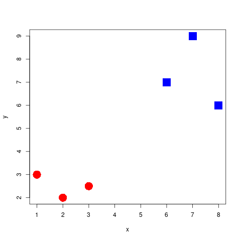
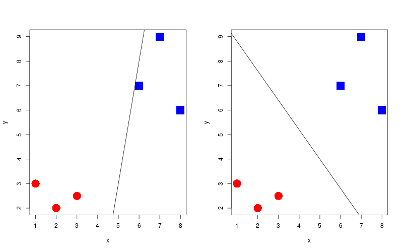
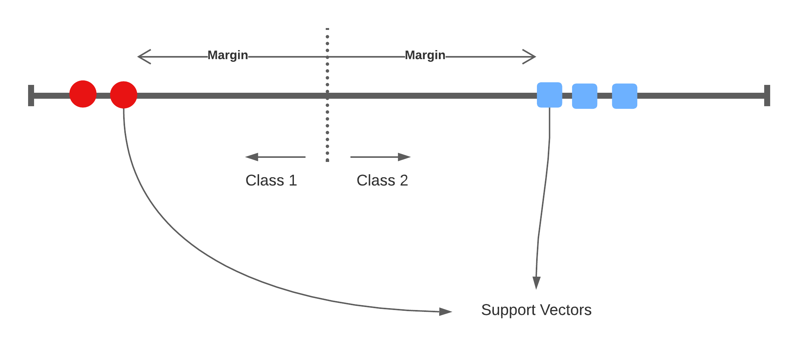

Support Vector Machines
Lecture 4
Introduction
Problem Statement

Which separator is best?

To get to the point of create such a decision boundary, we are going to look at three methods that build off of one another. These are:
- Maximal Margin classifier (MMC).
- Support Vector classifier (SVC).
- Support Vector Machine (SVM).
For the maximal margin classifier, we wish to position the decision boundary directly in the centre of these classes (more on this in the next slides), thus `maximising the margin’. The constraint for this model to which we must optimise is:
\[ y_i (\beta_0 + x \beta_1) \geq M \]
where \(y_i \in [-1, 1]\) (the label of the binary classification), and \(M\) is the margin between classes that we wish to maximise.
A 1-dimensional example
Classifying the space
Finding the best separator
Widest margin

Support vectors

Bias/Variance trade-off: If one of these support vectors changes then the maximal margin classifier will drastically change. This model has low bias, and high variance.

Support Vector Classifier
Accounting for miss-classifications

\[ y_i (\beta_0 + x \beta_1) \geq M (1 - \varepsilon_i) \]
This type of classifier is called the Support Vector Classifier with a soft-margin as it allows for miss-classifications to reduce the model’s variance.
where \(\varepsilon_i\) is the positive slack variable for each data point. In practice, the sum of all slack variables are bound by a user-defined norm: \(\sum_i \varepsilon_i \leq D\), where \(D\) is the tolerance for violating the margin of the SVC hyperplane.
There are three scenarios given the slack variable:
- \(\varepsilon_i = 0\) the data point lies on the correct side of the hyperplane and not within the margin (i.e. the point is correctly classified).
- \(\varepsilon_i > 0\) the point lies with the margin but on the correct side of the separator.
- \(\varepsilon_i > 1\) the point lies on the wrong side of the separator (i.e. that the data point is miss-classified).
Solution of the optimisation problem can be re-framed as unknown parameters (\(\alpha\)) of the function \(f(x)\) and the inner product to all other support vectors:
\[ f(x) = \beta_0 + \sum_{i=1}^m \alpha_i \langle x, x_i \rangle \]
As the constant \(\beta_0\) the number of allowed miss-classifications increases also.
Terminology
1-dimensional
- 1 dimensional space with a 0-dimensional separator, a point.
- flat affine 0-dimensional subspace
2-dimensional
- 2 dimensional space with a 1-dimensional separator, a line
- flat affine 1-dimensional subspace
3-dimensional

- 3-dimensional space with a 2-dimensional seperator, a plane
- flat affine 2-dimensional subspace
4+-dimensional
Here we lose the ability to be able to visualise the space easily… but nevertheless we can still create a SVC model. The separator in this space we refer to as a hyperplane.
Side note :B_block:
Technically all of the seperators in 1/2/3 dimensions can also be called hyperplanes, but we generally only this say this for 4+…
Non-separable spaces
How do we separate this space

Add dimensionality
We’ll take this 1-dimensional space, and add another dimension where the y-axis is \(x^2\). Suddenly, we’re able to separate the space:
How do we find an applicable transformation?
To make the space linearly separable in the previous example, we transformed the data into a higher dimension with the \(x^2\) transformation. But how do we decide which transformation to apply?
We’ll look at two types of transformations:
- Polynomial Kernel
- Radial Basis Function (RBF) Kernel
Instead of using the inner product, we now choose to use a kernel \(K\), and then our solution to the decision boundary looks like:
\[ f(x) = \beta_0 + \sum_{i=1}^m \alpha_i K(x, x_i) \]
This then is our Support Vector Machine we have been working towards. The kernel in this case, allows the method to classify non-linear relationships, which just wasn’t possible with the maximal margin classifier or the support vector classifier.
Polynomial Kernel
\[ (a \times b + r)^d \]
Where \(r\) and \(d\) are user-defined parameters to the kernel.
We show how, using this kernel, we needn’t explicitly transform the data to the higher dimensions as the kernel is equal to the dot product in these higher dimension feature spaces:
For convience, let \(r = \frac{1}{2}\), and \(d = 2\). Expanding the brackets:
\[ (a \times b + \frac{1}{2})(a \times b + \frac{1}{2}) \]
and simplifying to:
\[ ab + a^2 b^2 + \frac{1}{4} \]
Which can be represented as the dot product:
\[ (a, a^2, \frac{1}{4}) \cdot (b, b^2, \frac{1}{4}) \]
where \(a\) is the coordinate of the first sample on the first dimension, \(a^2\) is the coordinate on the second dimension and so on. Since \(\frac{1}{4}\) is present in both sides of the expression, we can drop this.
Therefore we see that, instead of computing the dot product in the higher dimensions, it is sufficient to apply the kernel.
Radial Basis Function Kernel
\[ e^{-\gamma(a - b)^2} \]
where \(\gamma\) is the scale of the kernel. This kernel generalises to infinite dimensions, and we return to how this can be true at the end of the lecture.
Kernel Trick
Let \(\phi(x)\) be a function transformation into a higher dimension. So we would have the following equation to compute the relationship in the higher dimension space:
\[ \phi(x_i) \cdot \phi(x_j) \]
The kernel trick is that we have a kernel function \(K(x_i, x_j) = \langle \phi(x_i), \phi(x_j) \rangle\) to which computes the relationship as if \(x_i, x_j\) was in a higher dimension, without needing to explicitly transformation \(x_i, x_j\) to these higher dimensional feature spaces!
How the RBF works in infinite dimensions
We are going to take a look at an interesting aspect of the RBF kernel: how does it work in infinite dimensions? But first, we’ll revisit the polynomial kernel. Let’s take our polynomial kernel with \(r = 0\), we have:
\[ (a \times b + r)^d = a^d b^d \]
All this does is scale the space on the one dimension.
But we can also add multiple polynomial kernels with different values for \(d\).
\[ a^1b^1 + a^2b^2 + ... + a^\infty b^\infty \]
And it continues to scale the space to infinity. We shall show how the RBF kernel works in very much this way.
Let’s first take our RBF kernel and expand the brackets and simplify:
\[\begin{align}e^{-\gamma(a-b)^2} &= e^{-\gamma(a^2-ab+b^2-ab)} \\ &= e^{-\gamma(a^2 - ab + b^2 - ab)} \\ &= e^{-\gamma(a^2 + b^2)} e^{\gamma 2ab}\end{align}\]
Setting \(\gamma = \frac{1}{2}\) to remove the 2 from the second term we have:
\[ e^{-\gamma(a^2+b^2)}e^{ab} \]
We can use taylor series expansion (a function is equal to an infinite sum) on the second term. For example, we have the taylor series expansion for some function \(f\):
\[ f(x) = f(a) + \frac{f'(a)}{1 !} (x - a) + \frac{f''(a)}{2 !} (x - a)^2 + ... \frac{f^\infty(a)}{\infty !}(x - a)^\infty \]
The same can be done for an exponential where the \(\frac{d}{dx} e^x = e^x\):
\[ e^x = e^a + \frac{e^a}{1!} (x - a) + \frac{e^a}{2!} (x - a)^2 + ... + \frac{e^a}{\infty!}(x-a)^\infty \]
But what is \(a\)? A can be anything so long as \(f(a)\) exists. So let’s choose something that makes our life simpler. We know that \(e^0 = 1\), so let \(a = 0\) :
\[ e^x = 1 + \frac{1}{1!} x + \frac{1}{2!} x^2 + ... + \frac{1}{\infty!}x^\infty \]
thus, going back our RBF kernel we have:
\[ e^{ab} = 1 + \frac{1}{1!} ab + \frac{1}{2!} (ab)^2 + ... + \frac{1}{\infty!}(ab)^\infty \]
This looks very much like what the polynomial kernel was doing! Then if we take this term and position it in terms of a dot product instead we have:
\[ e^{ab} = \left( 1, \sqrt{\frac{1}{1!}}a, \sqrt{\frac{1}{2!}}a^2, ..., \sqrt{\frac{1}{\infty!}}a^\infty \right) \cdot \left( 1, \sqrt{\frac{1}{1!}}b, \sqrt{\frac{1}{2!}}b^2, ..., \sqrt{\frac{1}{\infty!}}b^\infty \right) \]
And we can add the left term in terms of a dot product \(\sqrt{e^{-\frac{1}{2}(a^2 + b^2)}}\), which conciseness, we’ll refer to as \(s\)
\[ e^{-\frac{1}{2}(a^2+b^2)}e^{ab} = \]
\[ \left( s, s\sqrt{\frac{1}{1!}}a, s\sqrt{\frac{1}{2!}}a^2, ..., s\sqrt{\frac{1}{\infty!}}a^\infty \right) \cdot \left( s, s\sqrt{\frac{1}{1!}}b, s\sqrt{\frac{1}{2!}}b^2, ..., s\sqrt{\frac{1}{\infty!}}b^\infty \right) \]